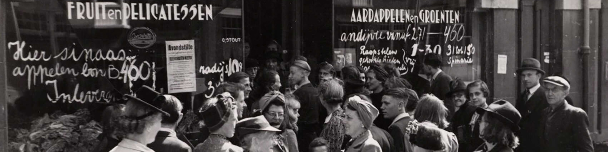
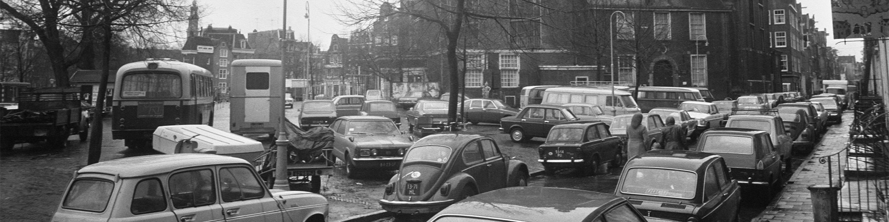
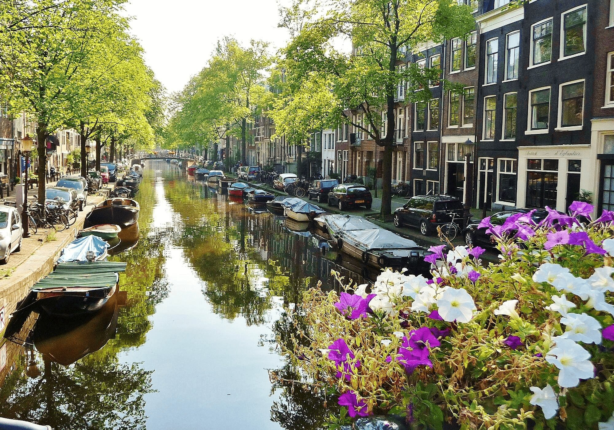
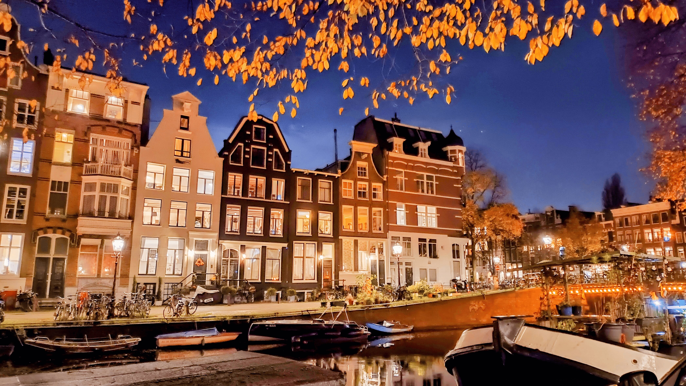
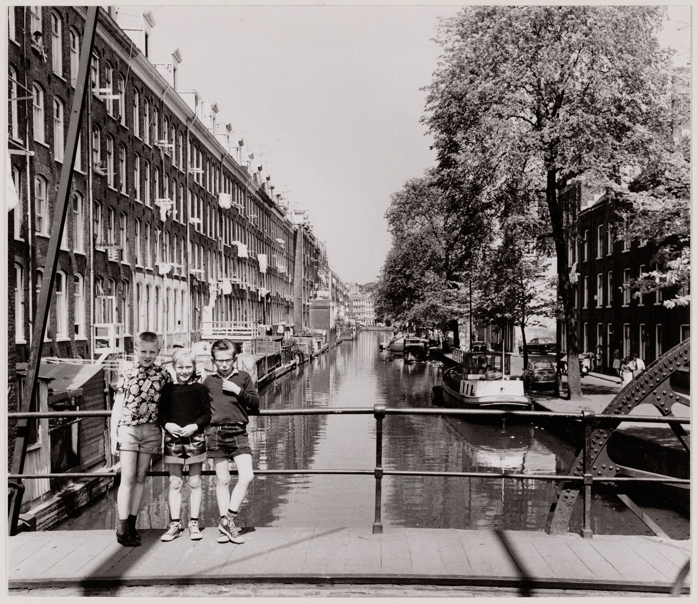
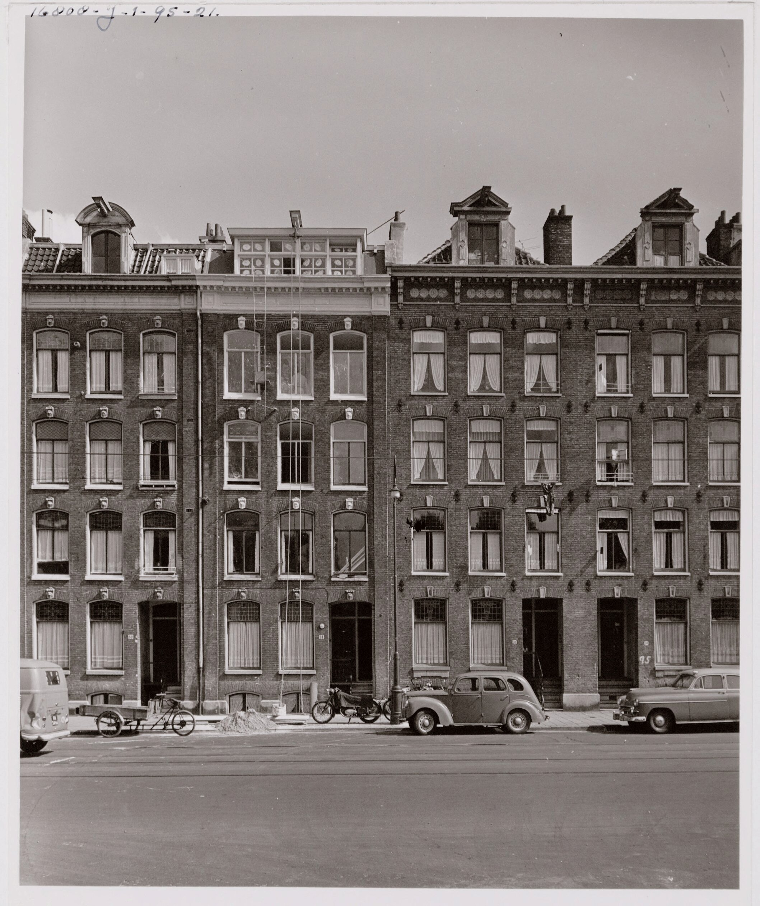
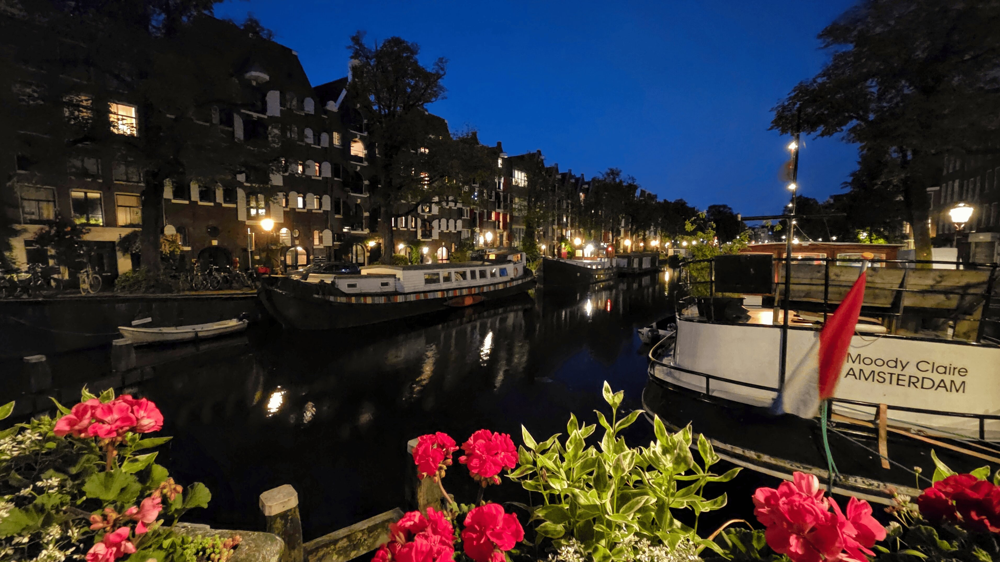
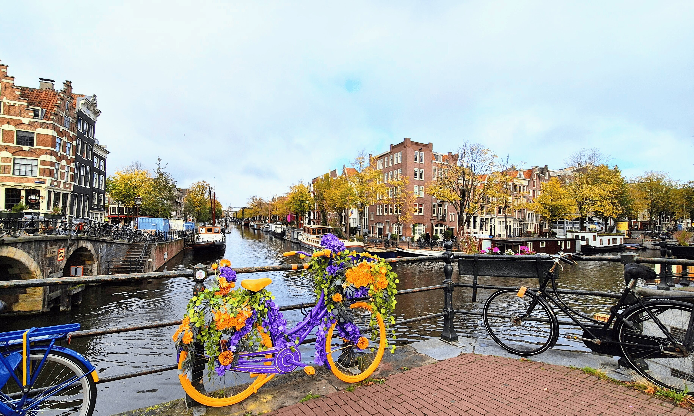

Canals & walks
Walk east into the Jordaan and towards Prinsengracht, Westerkerk and the canal ring, or continue through the smaller streets for a quieter view of the city.
Neighbourhood
The apartment sits on the western edge of the canal belt, in the Jordaan area, within easy reach of Haarlemmerdijk, Westerpark and the historic centre. It offers a very central Amsterdam setting, without the feeling of being in the city’s most touristic streets.

Walk east into the Jordaan and towards Prinsengracht, Westerkerk and the canal ring, or continue through the smaller streets for a quieter view of the city.
Noordermarkt is close enough for a Saturday morning walk: organic produce, flowers, bread, cheese and the kind of Amsterdam weekend rhythm that is better experienced than scheduled.
Westerpark is close by for walks, coffee, cinema, markets and open space — useful when you want a break from canals and narrow streets.
Historic layer
The Jordaan and the streets around it have changed enormously, but the older structure is still visible: water, brick façades, narrow streets, bridges and a dense urban rhythm that feels different from the grand canal belt.

Local character
The Jordaan was developed in the early seventeenth century, just outside the grand canal belt. It was not built as a merchant district, but as a dense working area of craftsmen, labourers, small houses, workshops and later immigrant communities.
That history still matters. Behind today’s galleries, cafés and restored façades, the Jordaan has a more layered past: poverty, overcrowding, music, markets, local pride and repeated attempts to protect the neighbourhood from demolition or over-sanitised redevelopment.

Archive views
A few archival views of the surrounding streets and canals: brick façades, water, houseboats, bridges and everyday Amsterdam life along the edge of the Jordaan.






Scroll sideways to see more archive views. Click any image to enlarge it.
On foot
The apartment is positioned for real Amsterdam daily life: the Jordaan, Haarlemmerdijk, canals, monuments, markets and green space are all within an easy walk.
Into the heart of the Jordaan — cafés, galleries and narrow streets
Haarlemmerdijk & Haarlemmerstraat — independent shops and food
The canal ring — Prinsengracht and Westerkerk
Westerpark & the Westergas — green space and weekend life
Noordermarkt — Saturday organic and Monday flea markets
Dam Square and the historic centre
The apartment page shows the rooms, terrace, views and practical details of the home.
View the apartment →